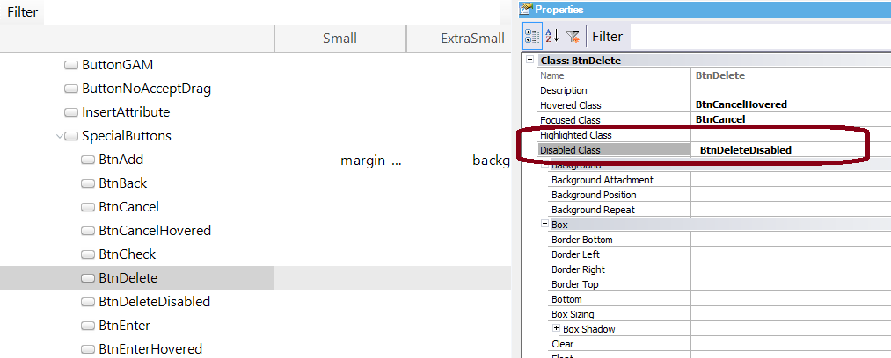

It is a property offered for the Button class (and its descendants) in the Theme for Web object. Establishes the appearance of the disabled buttons in the Abstract layout. Run-time/Design-timeThis property applies only at design-time. Samples
The Delete button of the default web Transaction form is associated with the (predefined) BtnDelete class. The Disabled Class property of the BtnDelete class is set with the value "BtnDeleteDisabled" (which contains the settings for the disabled buttons which have been associated with the BtnDelete class).  So, when a web Transaction is called in INS mode, its Delete button is disabled and its appearance depends on the Disabled Class property settings (that belongs to the BtnDelete class).
Scope Objects: Theme for Web |